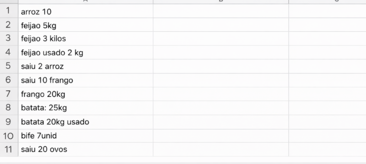
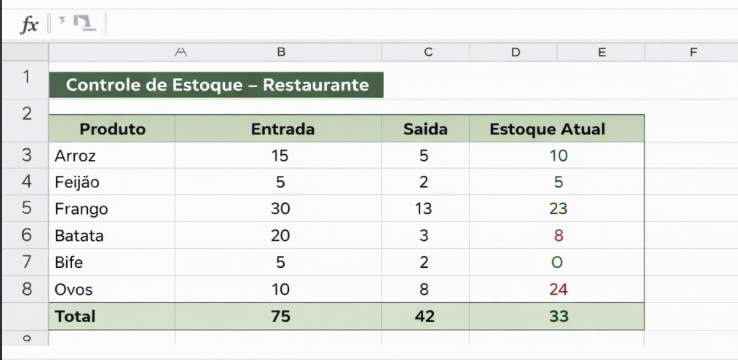
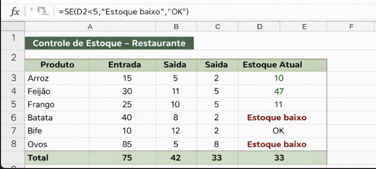

Transforme seu negócio em um sistema organizado que atrai clientes todos os dias
Criação de landing pages, automações simples e dashboards pra você parar de perder tempo e começar a crescer de verdade.
Quero mais clientes e organização
Criação de landing pages, automações simples e dashboards pra você parar de perder tempo e começar a crescer de verdade.
Quero mais clientes e organização
Transformo processos manuais em sistemas automáticos que economizam seu tempo todos os dias.
Páginas estratégicas que mostram seu serviço e fazem o cliente entrar em contato com você.
Transformo seus dados em painéis visuais simples e objetivos, para você entender seu negócio em segundos e tomar decisões com segurança.
Você passa a ter controle real do que acontece no seu negócio, sem complicação.
Você para de fazer tarefas repetitivas e ganha tempo no seu dia.
Você entende exatamente o que está acontecendo no seu negócio.
Seu negócio passa a ser encontrado e organizado para vender mais.
Se você sente que poderia estar ganhando mais e trabalhando melhor, isso é pra você.



R$ 500
Página profissional para atrair clientes
R$ 600
Organize processos e elimine tarefas manuais
R$ 700
Visualize dados e tome decisões com clareza
R$ 1.200
Site + automação + dashboard + organização
Atendimento direto, simples e sem enrolação.
Sou desenvolvedora e trabalho ajudando pequenos negócios a saírem da desorganização e terem mais controle e crescimento.
Crio landing pages, automações e dashboards que simplificam o dia a dia, eliminam tarefas manuais e deixam o negócio mais profissional.
Meu foco não é só tecnologia, é resultado: mais organização, mais clareza e mais oportunidades de venda.